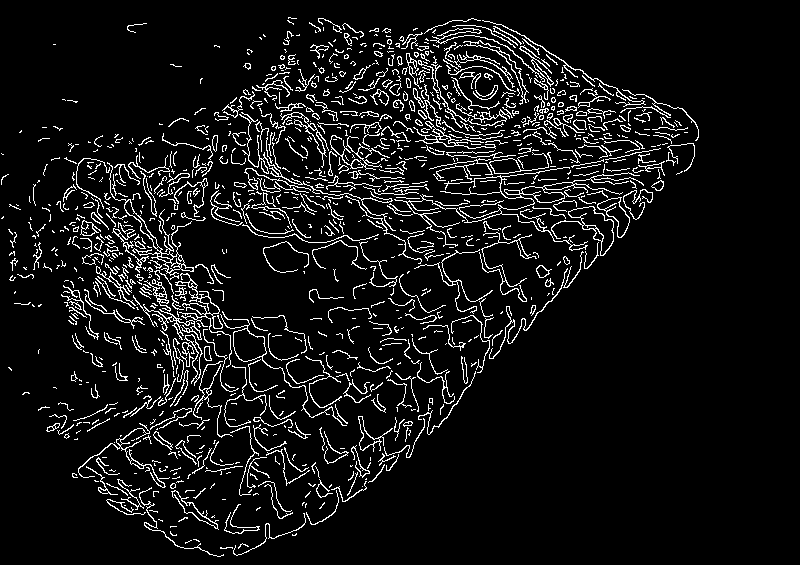
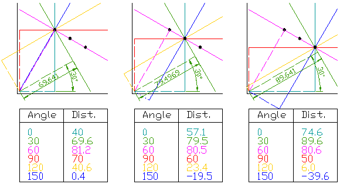
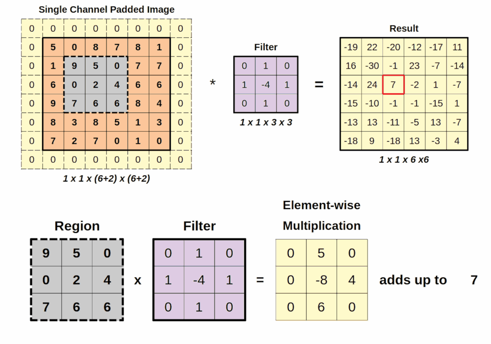
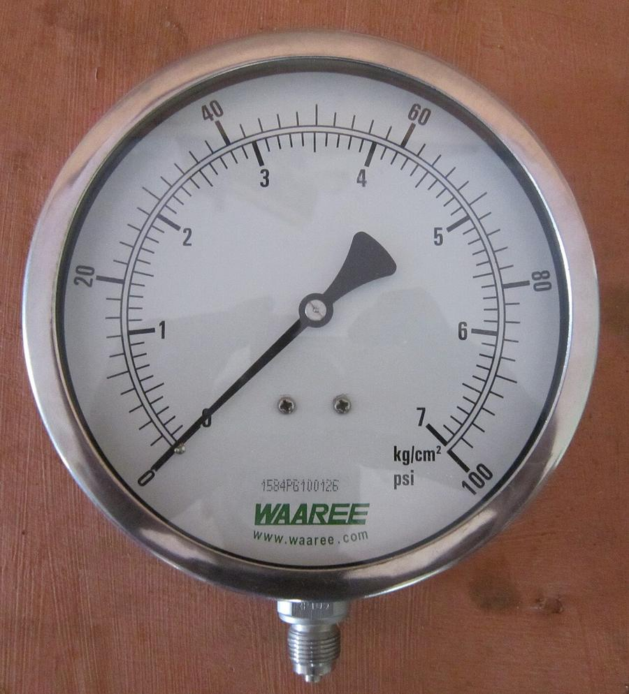
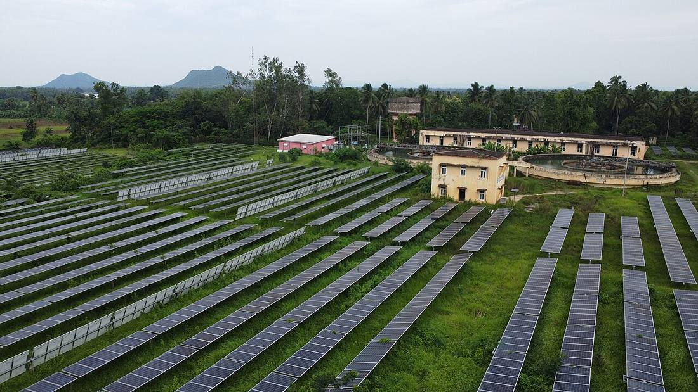
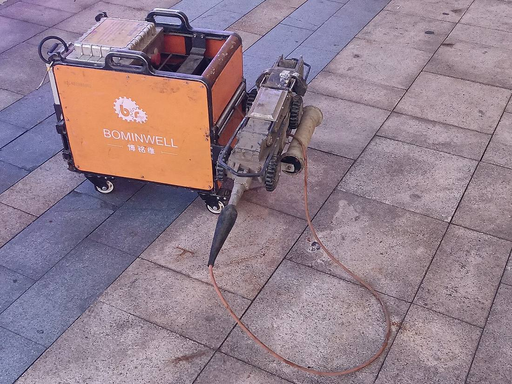

Computer Vision: from edge detectors to vision agents
Sixty years of teaching machines to see, from hand-written rules to deep learning, foundation models and LLMs that look, reason and act. Each era is told the same way: what came first, why, how it worked, what it fixed, and where it got stuck.
1966 Summer Vision Project memo
2012 AlexNet, the year the gap convinced the field
15.3% AlexNet top-5 test error
2026 Newest vision-agent items covered here
Visual timeline
1960s to 2026
MIT Summer Vision Project (1966), Hough transform (1962 patent), Canny edge detector (1986), Marr's Vision (1982)
Viola-Jones face detector (2001), SIFT (2004), HOG (2005), SURF (2006), SVMs & boosting
ImageNet (2009) → AlexNet (2012), VGG & GANs (2014), ResNet, YOLO, U-Net (2015), Mask R-CNN (2017)
DETR, ViT, DDPM (2020), CLIP, DINO, latent diffusion (2021), SAM & DINOv2 (2023)
LLaVA, GPT-4o (2024), SAM 2 (2024), DINOv3 & Qwen3-VL (2025), SAM 3 / SAM 3.1, YOLO26, Gemini 3 Agentic Vision, Gemini 3.5 Flash computer use (2026)
Landscape
The map of the field
Six branches, using only the families already on this page. Click a branch to collapse it. Drag to pan, and use the zoom controls.
Pipelines
How a picture moves through each era
flowchart LR A[Image] --> B[Edges and features] B --> C[Classifier]
The classical path on this page: edges and hand-made features, then a classifier such as an SVM or boosting.
flowchart LR A[Image] --> B[Learned convolutions] B --> C[Pooling] C --> D[Deeper layers] D --> E[Class, box, or mask]
LeNet through ResNet, YOLO, SSD, U-Net and Mask R-CNN: the features are learned, and the head answers what, where, or which pixels.
flowchart LR I[Image] --> P[16x16 patches] P --> T[Transformer] TI[Image encoder] --> S[Shared embedding] TT[Text encoder] --> S S --> Z[Zero-shot labels]
ViT cuts the image into patches. CLIP trains an image encoder and a text encoder into one embedding space, then classifies with plain-language labels.
flowchart LR In[Image, document, or video] --> VLM[Vision-language model] VLM --> Loop[Think, act, observe] Loop --> Tools[Tools: crop, zoom, SAM, code] Tools --> Loop Loop --> Out[Answer or action]
The loop described for SAM 3 Agent and Gemini's Agentic Vision: look, call a tool, check the result, then answer or act.
flowchart LR Frame[Camera or drone frame] --> Det[YOLO26 or RF-DETR] Det --> Mask[SAM 3 masks] Mask --> Note[VLM drafts the note] Note --> Human[Human sign-off]
The asset-inspection stack in the industry table: a detector, SAM 3 for masks, a VLM for the note, and a person on the safety-critical call.
1. Origins: the rules-and-geometry era (1960s–1980s)
1966
The summer that set the agenda
In 1966 Seymour Papert at MIT wrote up "The Summer Vision Project", a plan to have summer workers build a large part of a visual system in one summer, including separating figures from background. The problem turned out to be decades deep, but the memo framed computer vision as an engineering problem.
Edges
Edges first: Sobel and Canny
The first useful step was finding where brightness changes sharply, because edges outline objects. Sobel-style operators slide a small 3×3 kernel over the image to estimate the brightness gradient. John Canny's 1986 paper turned edge detection into an optimisation problem (good detection, good localisation, one response per edge) and gave the pipeline still taught today: smooth with a Gaussian, compute gradients, thin edges with non-maximum suppression, then link them with two thresholds (hysteresis).


Shapes
Shapes by voting: the Hough transform
Paul Hough patented a method in 1962 for finding particle tracks in bubble-chamber photos. Duda and Hart (1972) reformulated it with the angle-distance line form used today. Every edge pixel "votes" for all the lines (or circles) that could pass through it, and peaks in the vote space are the shapes. It still finds lane lines, pipes and gauge needles.


Theory
Marr's theory of vision
David Marr's book Vision (1982, published after his death) argued vision should be understood at three levels: what is computed and why, the representation and algorithm, and the hardware. He described a pipeline from a "primal sketch" (edges, blobs) to a "2½-D sketch" (depth and surface orientation from the viewer) to full 3-D object models. That layered idea, from low-level features up to objects, shaped the field for decades.
Computers were slow, memory was tiny, digital images were scarce, and there were no labelled datasets to learn from. The only option was to write down rules from geometry and physics by hand.
Hand-written rules break with lighting, clutter, viewpoint and occlusion. Finding edges is easy. Deciding which edges make up "a valve" is not.
2. Classical ML: hand-crafted features + classifiers (~1999–2011)
The new idea: people still design the features, but a learning algorithm draws the decision boundary from labelled examples.
2001
Viola-Jones: real-time face detection
Simple rectangular "Haar-like" features, computed in constant time from an integral image, were picked by AdaBoost and arranged in a cascade so easy background regions are rejected in a few operations. It was the first detector fast enough for real-time faces on ordinary hardware, and it went into consumer cameras.
2004 · 2006
SIFT and SURF: keypoints that survive change
David Lowe's SIFT finds distinctive keypoints across scales and describes each with histograms of local gradient orientation. The descriptors match even when the image is scaled, rotated or lit differently. SURF used box filters and integral images to make the same idea faster. These powered panorama stitching, object recognition and 3-D reconstruction.
2005
HOG + SVM: pedestrians
Dalal and Triggs described image windows with histograms of oriented gradients (HOG) and classified them with a linear SVM. This became the standard way to detect people.
More compute and the first benchmark datasets made it possible to learn classifiers, but there was still too little data and compute to learn the features too.
Every new task needed experts to engineer new features. Accuracy hit a ceiling on varied, real-world categories, and the pipelines were brittle.
3. Deep learning: learn the features too (2012–2019)
1998
LeNet: the idea was early
LeCun and colleagues trained convolutional neural networks (CNNs) end to end with gradient descent for handwritten digit and cheque reading (the 1998 "Gradient-based learning" paper describes LeNet-5). Convolution, pooling and learned filters were all there, but the compute and data to scale them to natural photos were not.
2009 · 2012
ImageNet + GPUs → AlexNet
ImageNet (Deng et al., 2009) gave the field millions of labelled images organised by WordNet categories. Its 1,000-class challenge (ILSVRC) became the yardstick. In 2012, AlexNet (Krizhevsky, Sutskever and Hinton) trained a deep CNN on two GPUs with ReLU activations and dropout, and cut the top-5 test error to 15.3% against 26.2% for the next best entry. That gap convinced the field.
Three things arrived together. There was big labelled data (ImageNet), cheap parallel compute (GPUs built for gaming turned out to suit the matrix maths), and training tricks (ReLU, dropout, data augmentation).


2014 · 2015
Deeper and better backbones
- VGG (2014): stacks of small 3×3 convolutions showed that depth matters.
- ResNet (2015): residual ("skip") connections made very deep networks trainable (up to 152 layers on ImageNet) and won ILSVRC 2015 with 3.57% top-5 error.
Detection
Detection: where, not just what
- R-CNN (2013): CNN features on region proposals.
- Fast R-CNN (2015) shared computation across regions.
- Faster R-CNN (2015) learned the proposals with a Region Proposal Network.
- YOLO (2015): "You Only Look Once" treats detection as one regression pass, which makes it real-time.
- SSD (2015): single-shot detection on multi-scale feature maps.
Segmentation
Segmentation: every pixel
- U-Net (2015): an encoder-decoder with skip connections that works with few training images. It started in biomedical imaging and is now everywhere, including inside diffusion models.
- Mask R-CNN (2017): adds a mask branch to Faster R-CNN for instance segmentation.
2014
Generation: GANs
Goodfellow et al. trained a generator against a discriminator in a two-player game, so a network could produce realistic images rather than only label them.
Every task needed its own large labelled dataset and its own model. Models recognised only the fixed classes they were trained on and were weak at long-range context.
4. Transformers and foundation models (2020–2025)
2020
DETR
Object detection as set prediction with a transformer, with no anchors and no NMS.
2020
ViT
"An Image is Worth 16x16 Words" cuts an image into patches and feeds them to a standard transformer. Pre-trained at scale, it matches or beats CNNs.
2021
CLIP
Learns images and text in a shared embedding space from 400 million image-text pairs. It can classify zero-shot with plain-language labels and is the bridge between vision and language.
2021 · 2023 · 2025
DINO, DINOv2 and DINOv3
Self-supervised learning without labels. DINOv3 scales to a 7B-parameter ViT trained on about 1.7B curated images, adds "Gram anchoring" to keep dense (per-patch) features sharp during long training, and is distilled into smaller ViT and ConvNeXt models. Meta also reports results on aerial and satellite imagery.
2023
Segment Anything (SAM)
A promptable segmentation model (click, box or mask in, mask out) trained on SA-1B, a dataset of over 1 billion masks on 11 million images.
2024
SAM 2
Extends promptable segmentation to video with a streaming memory.
Nov 2025 · ICLR 2026
SAM 3
Promptable Concept Segmentation. Give it a short noun phrase ("yellow school bus") or an example image and it finds, segments and tracks every matching instance in images and video. It was trained with a human-plus-AI data engine covering about 4M unique concepts. Meta reports roughly 2× the accuracy of existing systems on its SA-Co benchmark.
27 Mar 2026
SAM 3.1
A drop-in update that uses object multiplexing to track up to 16 objects in one forward pass. Meta reports throughput going from 16 to 32 fps on one H100 for videos with a medium number of objects.
2020 · 2021
Diffusion models
DDPM (2020) generates images by learning to reverse a gradual noising process. Latent diffusion (2021, the basis of Stable Diffusion) runs that process in a compressed latent space so high-resolution generation becomes affordable.
One big pre-trained model plus a prompt (text, a click, an example) replaces a custom model per task. Labels shift from "required" to "optional".
5. Vision + LLMs: models that look, reason and act (2023–2026)
Vision-language models
LLaVA (2023)
"Visual Instruction Tuning" connects a CLIP vision encoder to an LLM and tunes it on GPT-generated multimodal instruction data. It was the open template many VLMs followed.
2024
GPT-4o
OpenAI's "omni" model, trained end to end across text, vision and audio.
APIs
Gemini and Claude vision
Both are natively multimodal through their APIs (charts, screenshots, documents, photos).
2023 · Nov 2025
Qwen-VL and Qwen3-VL
Open-weight VLMs. Qwen3-VL comes in dense 2B/4B/8B/32B and MoE 30B-A3B/235B-A22B sizes, has a native 256K-token interleaved context for long documents and video, and adds text-timestamp alignment for temporal grounding in video.
2023
Florence-2
A compact Microsoft model that does captioning, detection, grounding, segmentation and OCR from text prompts with one architecture. It is a good fit for edge and batch jobs.
Open-vocabulary detection
OWL-ViT and OWLv2
CLIP-style detectors that take text queries.
2023 · 2024
Grounding DINO and Grounding DINO 1.5
Grounding DINO (2023) and Grounding DINO 1.5 (2024, incl. an "Edge" variant): text-prompted, open-set detection.
Nov 2025 · ICLR 2026
RF-DETR
A real-time detection transformer on a DINOv2 backbone, found with neural architecture search. It exports to ONNX/TensorRT and other runtimes.
Jan 2026
YOLO26
Built for edge and low-power devices. It has native end-to-end NMS-free inference, drops DFL, uses a MuSGD optimiser (SGD combined with Muon), reports up to 43% faster CPU inference for the nano model, and includes YOLOE-26 open-vocabulary variants.
Video
Video understanding
Long-context VLMs now read long videos and documents in one pass. Qwen3-VL's 256K context and explicit timestamps are one example. SAM 2, SAM 3 and SAM 3.1 handle pixel-accurate tracking. A common pattern is VLM for "what is happening and when" + SAM for "exactly which pixels".
Vision agents
SAM 3 Agent
Meta shows an MLLM using SAM 3 as a tool. The model proposes noun phrases, checks the masks that come back, and iterates, which handles complex queries SAM 3 alone cannot.
27 Jan 2026
Gemini 3 Flash "Agentic Vision"
A Think, Act, Observe loop in which the model writes and runs Python to crop, zoom, rotate, annotate and count, then looks at the result before answering. Google reports a consistent 5–10% quality gain across most vision benchmarks when code execution is enabled.
24 Jun 2026
Gemini 3.5 Flash computer use
Computer use is now a built-in tool, so agents see screens and act in browser, mobile and desktop apps. Google lists 78.4% on OSWorld-Verified in its model card. It also offers optional safeguards: confirmation before sensitive or irreversible actions, and automatic stop when an indirect prompt injection is detected.
Vision became an input to reasoning and then a loop with tools. The model zooms in, calls a segmenter, checks its answer and takes an action.
Highlighted
6. Why each shift happened
| Era | Key idea | What it fixed | What it couldn't do |
|---|---|---|---|
| Rules & geometry (1960s–80s) | Hand-written maths: gradients, edges, Hough voting, Marr's layered model | Worked with almost no compute and no labelled data; precise and explainable | Broke with lighting, clutter and viewpoint; no notion of object categories |
| Hand-crafted features + ML (~1999–2011) | Experts design features (Haar, SIFT, HOG, SURF); SVMs and boosting learn the decision | Real-time face and pedestrian detection; robust matching and stitching | Features had to be re-engineered per task; accuracy ceiling on varied categories |
| Deep learning / CNNs (2012–19) | Learn the features end to end with GPUs on ImageNet-scale data | Big jumps in classification, detection and segmentation; GANs for generation | Needed large labelled datasets per task; fixed class lists; one model per job |
| Transformers & foundation models (2020–25) | Pre-train at scale (ViT, CLIP, DINO); promptable models (SAM); diffusion | Zero-shot and few-shot transfer; labels optional; one backbone for many tasks | Large and costly; weak at multi-step reasoning and explaining why |
| Vision + LLMs & agents (2023–26) | VLMs reason over images, documents and video; tools (code, SAM) and actions in a loop | Natural-language questions, document and diagram understanding, open-vocabulary detection, agents that act | Can hallucinate and miss fine pixels; latency and cost; prompt-injection and safety risks when acting |
7. For energy and industry: a consultant's playbook







| Use case | Typical stack (2026) | Watch-outs |
|---|---|---|
| Asset inspection (corrosion, leaks, insulation damage, gauge reading) | YOLO26 or RF-DETR fine-tuned on your defect classes; SAM 3 for fast mask labelling; a VLM to draft the inspection note | Rare defects mean little data, so use few-shot and exemplar prompts. Keep a human sign-off on safety-critical calls. |
| HSE and safety cameras (PPE, exclusion zones, line-of-fire, spills or smoke) | Open-vocabulary detectors (Grounding DINO, YOLOE) for new rules without retraining; tracking for dwell time and zone entry | Privacy and works-council rules (blur faces, as SAM Playground's templates show). Set false-alarm budgets with operators. |
| Document and diagram understanding (P&IDs, datasheets, scanned permits) | Symbol and line detection plus OCR, then graph building. Research: P&ID info extraction (arXiv 1901.11383), Digitize-PID (2109.03794), transformer P&ID-to-graph (2411.13929). Long-context VLMs (Qwen3-VL, Gemini, Claude) for Q&A over drawings | Check line connectivity and tag numbers against the source drawing. Never trust a VLM's reading of a safety-critical tag without checking it. |
| Drone and satellite imagery (pipeline right-of-way, solar or wind farm health, methane-site context, land change) | DINOv3 backbones (Meta reports satellite-imagery use), segment-geospatial (SAM for geospatial), TorchGeo | Different resolution and sensors (RGB, multispectral, thermal). Check licensing of the imagery. |
| Edge deployment (offshore, remote sites, low bandwidth) | YOLO26 NMS-free export to ONNX, TensorRT or OpenVINO; Grounding DINO 1.5 Edge; INT8 quantisation | Plan for model updates over poor links, drift monitoring, and hardware ruggedisation. |
How the AI Engineering pillars apply to vision
-
AI Engineering · Context
Send the right pixels. Crop, tile or zoom high-resolution drawings and frames, and attach metadata (asset ID, location, time). Agentic Vision's crop-and-zoom loop is this idea in practice.
-
AI Engineering · Cost
Image and video tokens add up. Use a small detector at the edge to filter frames, and call a large VLM only on flagged events. Choose model size per job (for example, the Qwen3-VL 2B to 235B range).
-
AI Engineering · Measure
Build a labelled evaluation set from your sites. Track precision and recall per defect class, false alarms per camera per day, and time saved per inspection. Public benchmark scores do not transfer automatically.
-
AI Engineering · Guardrails
Keep a human in the loop for safety-critical decisions. Blur faces and plates, and log every automated action. For agents that act on screens or systems, require confirmation for irreversible steps and stop on detected prompt injection (as in Gemini 3.5 Flash's optional safeguards).
-
AI Engineering · Tools + agents
Treat SAM 3, OCR, detectors and code execution as tools a VLM calls (SAM 3 Agent pattern). Return structured JSON (boxes, tags, confidence) into work-order or CMMS systems.
FDE angle
In a forward-deployed role the work is rarely "train a model". It is mapping the operator's workflow, collecting 200 hard examples, wiring a detector + VLM + human review loop, and proving the ROI on one site before scaling.
8. Try it hands-on
Project 1 · 1 evening
Classic vs. modern edge-and-shape finder
Run OpenCV's Canny and Hough lines on a photo of pipes or a pressure gauge. Then run a text-prompted detector or segmenter on the same image and compare the outputs.
Project 2 · weekend
PPE / safety-zone detector on the edge
Fine-tune YOLO26n on a small hard-hat or vest dataset, export NMS-free to ONNX, and use Roboflow Supervision to draw zones and count entries.
Project 3 · 1–2 weekends
"Ask my drawing" P&ID assistant
Tile a public sample P&ID, use Florence-2 for OCR and regions (or Grounding DINO for symbol boxes), then have a VLM (Qwen3-VL locally, or the Gemini or Claude vision APIs) answer "which valves are on line X?" with cited boxes. Score it against a hand-labelled answer key.
Latest updates
Dated entries go here, newest first.
-
Page launched. Newest items covered: SAM 3.1 (Mar 2026), YOLO26 (Jan 2026), Gemini 3 Flash Agentic Vision (Jan 2026), Gemini 3.5 Flash computer use (Jun 2026), DINOv3 (Aug 2025), Qwen3-VL (Nov 2025), RF-DETR (Nov 2025).
Future entries: add a dated item here and/or a digests.json entry with "type": "computer-vision".
Sources
All dates and figures above come from the linked papers, official blogs, model cards or docs (checked 2 Nov 2026). Benchmark numbers are vendor-reported.